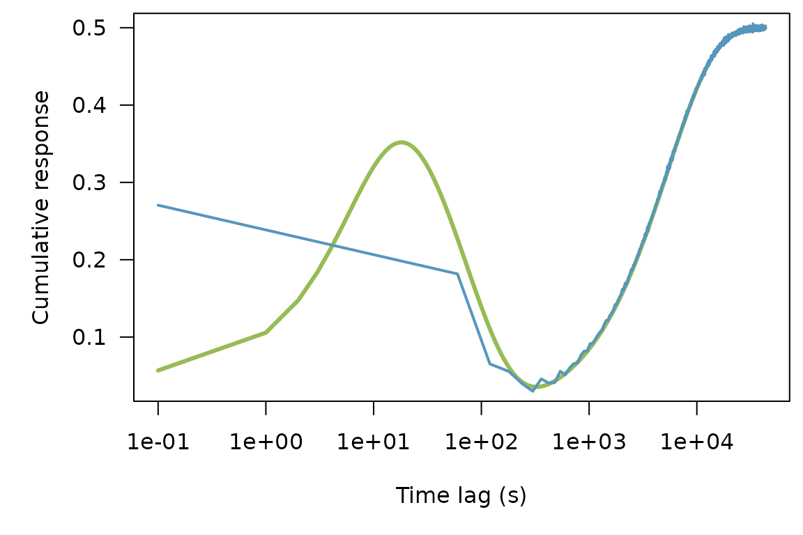

synthetic_example.RmdTo test the efficiency of different methods we will create a response function, apply it to some barometric pressure data to generate a synthetic water level response.
This is the function we will try to recreate! It is the combination of three exponentials of different lengths:
60 second (negative)
600 second (negative)
43201 second (positive)
exp1 <- -exp(-seq(0.01, 8, length.out = 60))
exp2 <- -exp(-seq(0.01, 8, length.out = 43201))
exp3 <- exp(-seq(0.01, 8, length.out = 600))
exp1 <- exp1 / sum(exp1)
exp2 <- exp2 / sum(exp2)
exp3 <- exp3 / -sum(exp3)
exp1 <- c(exp1, rep(0.0, length(exp2) - length(exp1)))
exp3 <- c(exp3, rep(0.0, length(exp2) - length(exp3)))
kern <- rev(exp1 + exp2 + exp3)
resp_fun <- cumsum(rev(kern))*0.5Convolution of barometric pressure data and response function. Water levels have a dampened appearance and are lagged slightly in relation to the barometric response. This is commonly observed at field sites. There is no noise in this example so we hope to perfectly recover the response function.
Regular lag methods can generate large regression matrices, and therefore, we will subset our data prior to analysis. We start with one second data, but will subset to 60 seconds. The matrix size will be
dt <- 60
dat_sub <- dat[seq(1, nrow(dat), dt)]
ba_lags <- seq(0, (43200+dt) / dt, 1)
rec <- recipe(wl~., dat_sub) %>%
step_lag_matrix(baro, lag = ba_lags) %>%
prep() %>%
portion()
dim(rec)
#> [1] 3600 3What if we only had data every 30 minutes?
#> variable form n_obs n_coef df sigma r_squared
#> <char> <char> <int> <int> <int> <num> <num>
#> 1: wl outcome ~ lag_matrix 2879 723 2156 5.316373e-05 0.999997
#> AIC pivot has_intercept term_labels coefs
#> <num> <list> <lgcl> <list> <list>
#> 1: -47885.33 1,2,3,4,5,6,... TRUE lag_matrix <data.table[723x5]>
We won’t subset in this case. We will use fewer regressors but have many more observations. These results are even better.
ba_lags <- log_lags(251, max_time_lag = 43201)
rec <- recipe(wl~., dat) %>%
step_lag_matrix(baro, lag = ba_lags) %>%
prep() %>%
portion()
dim(rec)
#> [1] 216000 3#> variable form n_obs n_coef df sigma r_squared
#> <char> <char> <int> <int> <int> <num> <num>
#> 1: wl outcome ~ lag_matrix 172800 201 172599 2.341373e-05 0.9999992
#> AIC pivot has_intercept term_labels coefs
#> <num> <list> <lgcl> <list> <list>
#> 1: -3194264 1,2,3,4,5,6,... TRUE lag_matrix <data.table[201x5]>We won’t subset in this case and we will only use 15 regressors.
ba_lags <- log_lags(18, max_time_lag = 43201)
rec <- recipe(wl~., dat) %>%
step_distributed_lag(baro, knots = ba_lags) %>%
prep() %>%
portion()
dim(rec)
#> [1] 216000 3#> variable form n_obs n_coef df sigma
#> <char> <char> <int> <int> <int> <num>
#> 1: wl outcome ~ distributed_lag 172800 19 172781 5.672424e-06
#> r_squared AIC pivot has_intercept term_labels
#> <num> <num> <list> <lgcl> <list>
#> 1: 1 -3684405 1,2,3,4,5,6,... TRUE distributed_lag
#> coefs
#> <list>
#> 1: <data.table[19x5]>